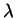

A category theoretic reconstruction of our new transformations such as that
for foldl (restricted to RUL programs) may produce some deeper
insights and should extend the understanding of shape and polytypism for
functional languages. A more theoretical treatment of the higher order
logic programs we derive may also be worthwhile.
A language such as -Prolog (Nadathur and Miller, [NM88])
which has higher order constructs with well defined semantics is a
potential basis, and has been used for characterisation of schemas
(Gegg-Harrison, [GH95], [GH96]).
Incorporating transformations such as those
we have suggested into logic programming languages which support some
notion of types would also enrich these languages.
The tools we have implemented could also be improved and extended. The
tool which converts from type definitions to Horn clauses should ideally
support an expressive type language but always output the simplest possible
Horn clause definitions. The tool which generates higher order definitions
could also be enhanced. Instead of always producing code cotaining
call/N there could be optional support for apply/3.
Alternatively, ``??'' could be output instead of call and
the extra higher order arguments could be avoided, supporting the stepwise
enhancement paradigm. Other ``shapely'' operations such as zip2/3
(which takes two lists and returns a list of pairs) could also be
generalised, as suggested by (Jay, [Jay95]). Further generalisations of
foldr and foldl could also be devised (Belleannie et al
[BBR97]). For example, we could add higher order calls to the
start and end of each clause body, or even between each call as
well. We have identified one higher order predicate for lists,
map_acc, which is a combination of foldr (map) and
foldl (accumulators) and could be generalised to other data types.
We note that while the quest for more expressive constructs is alluring,
the ``Holy Grail'' is not a single construct with ultimate expressive
power: that is what we started with -- a general purpose programming
language. There is no benefit in replacing foldr and foldl
by a more general predicate which is applicable in twenty percent more
situations if each use is twice as complicated. The ideal situation is to
have a collection of higher order predicates or functions with a good
tradeoff between applicability and complexity. Such sets can be developed
over time, based on coding patterns which occur in practice, and
properties of different (sets of) primitives can be established.